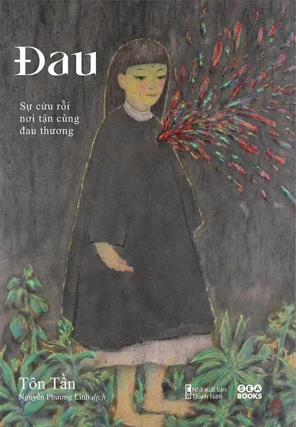
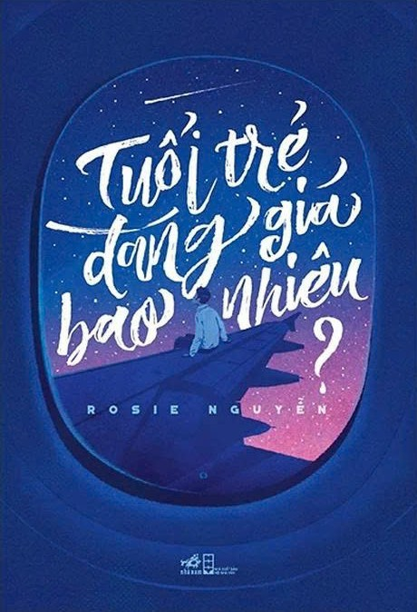
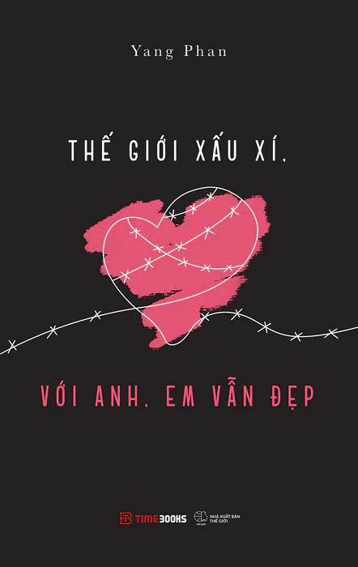

📖 TỦ SÁCH
"Những cuốn sách đã thay đổi bản thân em."

Đau
Tác giả: Tôn Tần
Một câu chuyện phản ánh về những mặt xấu nhất của thế giới này.

Tuổi trẻ đáng giá bao nhiêu?
Tác giả: Rosie Nguyễn
Cuốn sách "dẫn đường" cho em về sự thấu hiểu giá trị thật sự của tuổi trẻ.

Thế giới xấu xí, với anh, em vẫn đẹp
Tác giả: Yang Phan
Một cuốn sách ẩn chứa nhiều sự ẩn dụ nghệ thuật về thực tiễn cuộc sống ngày nay.